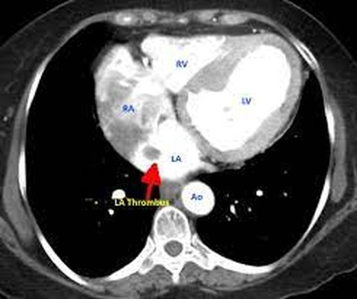
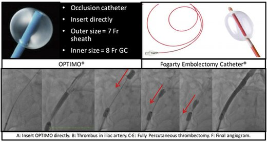
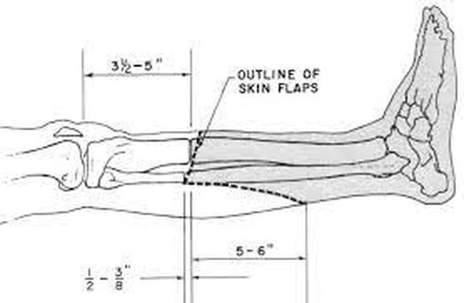

Slides 27–34 · embolism vs thrombosis · heparin · thrombolysis vs Fogarty · reperfusion and compartment syndrome · amputation levels
Acute Limb Ischemia, Compartment Syndrome & Amputation
Causes (slides 27–28)
Embolism
Debris (thrombus, lipid, tumor) breaks off upstream. Most are cardiac: left atrial mural thrombus in AF ("the biggest thing we have"), ventricular thrombus after MI, rheumatic valve disease, prosthetic valve vegetations, atrial myxoma. Non-cardiac: atherosclerotic or aneurysmal sources (popliteal aneurysm), thoracic outlet syndrome, iatrogenic atheroemboli after catheter procedures.
Thrombosis
In situ on an atherosclerotic plaque; hypercoagulable states (even without atherosclerosis); extension of an aortic or arterial dissection; acute occlusion of a previously patent bypass graft. A thrombus either breaks off or grows, so it always needs a plan, even if that plan is monitoring.

- Symptoms depend on the size of the artery and the collaterals.
- Macroemboli lodge at bifurcations. Board add-on The common femoral bifurcation is the commonest site.
- Microemboli go to the tibial or digital vessels → blue toe syndrome.
- Evaluation: prompt exam, CTA with runoff, duplex, on-table angiography to direct therapy.
A non-vascular embolus after long-bone fractures. Lecture: respiratory insufficiency with a broken femur → look for petechiae (the recording says "splinters" in the fingernails). "The good news is you made the diagnosis, the bad news is you can't fix it": treatment is supportive. Board add-on Classic triad 24–72 h after the fracture: hypoxemia, confusion, petechial rash (axillae, conjunctivae, chest).
Treatment (slide 31)
- Anticoagulate: IV heparin is the drug of choice"Always the first step in critical limb ischemia." It stops propagation while you plan.
- Percutaneous thrombectomy / catheter-directed thrombolysisPreferred when motor and sensory function are intact (there's time). Useful in the frail 90-year-old who can't have general anesthesia.
- Open thrombectomy / embolectomyA Fogarty balloon catheter is passed through the embolus, the balloon inflated, and the clot pulled out. Combined open + endovascular (angioplasty, stent) is common.
- Then find the source"Where did it come from and how do we prevent it from happening again?" (echo, rhythm monitoring, long-term anticoagulation for AF).
Stroke or brain surgery within 2 months · major surgery within 2 weeks · significant bleeding risk. The lecture's example: give tPA to a patient with peptic ulcer disease and "now we've got a massive GI bleed."

Reperfusion and compartment syndrome (slide 32)
- Timing: past about 6–8 hours without flow (lecture) "it's probably going to come off." Board add-on Irreversible muscle and nerve necrosis after ~4–6 h of compartment ischemia.
- Mechanism: reperfusion injury: "like putting peroxide right into the bloodstream." Oxygen free radicals damage capillary membranes → muscle swells inside its fascia → pressure exceeds perfusion → ischemia again.
- Signs: pain on passive stretch, tense calf tenderness, numbness in the first web space (deep peroneal nerve, anterior compartment).
- Treatment: fasciotomy, limb-saving, decided on clinical findings. A Stryker device measures compartment pressure. Board add-on Pressure ≥ 30 mm Hg or ΔP (diastolic − compartment) ≤ 30 mm Hg.
- Check the patient every couple of hours after revascularisation. Gray, dead muscle at fasciotomy = "you waited too long."

Amputation (slides 33–34)
- Indications: non-ambulatory bed-bound patients, non-reconstructable disease, after weighing risks and benefits. "Life over limb."
- Goals: remove all infected and necrotic tissue at the level that maximises rehabilitation; preoperative functional status matters.
- Levels: toe · transmetatarsal · below-knee (~10 cm below the tibial tuberosity, long posterior gastrocnemius flap, bevelled tibia) · above-knee.
| Level | Extra energy to walk (slides) | Recording |
|---|---|---|
| Below-knee | 10–40% | "About 35–45%" |
| Above-knee | 50–70% | — |
A frail patient with CAD or COPD often can't make up that energy cost, which is why the conversation before amputation matters: "they're expecting, 'Oh, I got my leg taken off, I'm good to go.' Well, that's not necessarily the case."

Q: A 74-year-old with atrial fibrillation has a sudden cold, pale, pulseless right leg; sensation is reduced but she can wiggle her toes. First drug, and is thrombolysis an option?
IV heparin immediately. With motor function intact, catheter-directed thrombolysis or percutaneous thrombectomy is preferred if there's no contraindication; otherwise Fogarty embolectomy. Then treat the source (anticoagulation for AF).
Q: Six hours after femoral embolectomy the calf is tense, passive dorsiflexion of the toes is excruciating, and the first web space is numb. Diagnosis and treatment?
Compartment syndrome from reperfusion injury; emergency fasciotomy.
Q: Which patient should not receive tPA for acute limb ischemia: one with a stroke 6 weeks ago, or one with a knee arthroscopy 5 weeks ago?
The stroke 6 weeks ago (within 2 months is an absolute contraindication). Major surgery is a contraindication only within 2 weeks.